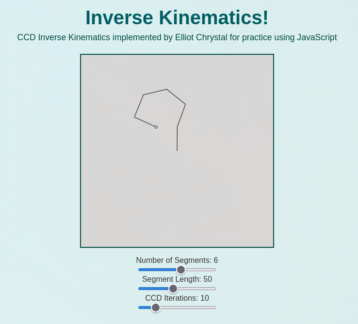

CCD Inverse Kinematics in Javascript
Status: complete • Date: 2026-04-22 • Tags: javascript, CCD, algorithms
Cyclic Coordinate Descent Inverse Kinematics (CCD) is a method of finding the best rotation for each joint starting at the end of the "arm". This iterative approach gets closer and closer to the target with each pass. Warning: I dont think any of the sliders work on mobile, I would look into it but this was just a little morning excercise for me :)
Links
Summary
The CCD inverse kinematics algorithm relies on a simple iterative process to position a chain of joints so that an end effector reaches a target. The first concept is end effector targeting, where the algorithm continuously attempts to move the final joint in the chain closer to the desired position. The second is joint rotation, or adjusting each joint starting from the end of the chain and working backwards to better align the end effector with the target. The last concept is iteration, or repeatedly applying these adjustments until the end effector is sufficiently close to the target.
The wikipedia article on inverse kinematics goes into greater detail on why you might want to do this.
The combined effect of end effector targeting, joint rotation, and iteration results in smooth and natural motion that allows articulated structures, such as robotic arms or character limbs, to reach toward a goal in a believable way.

Context
I wanted to create another little demo in Javascript after my exams this semester. I have implemented this before in a visual scripting language in a game, but I thought that it would be cool to have something else to put on my site!